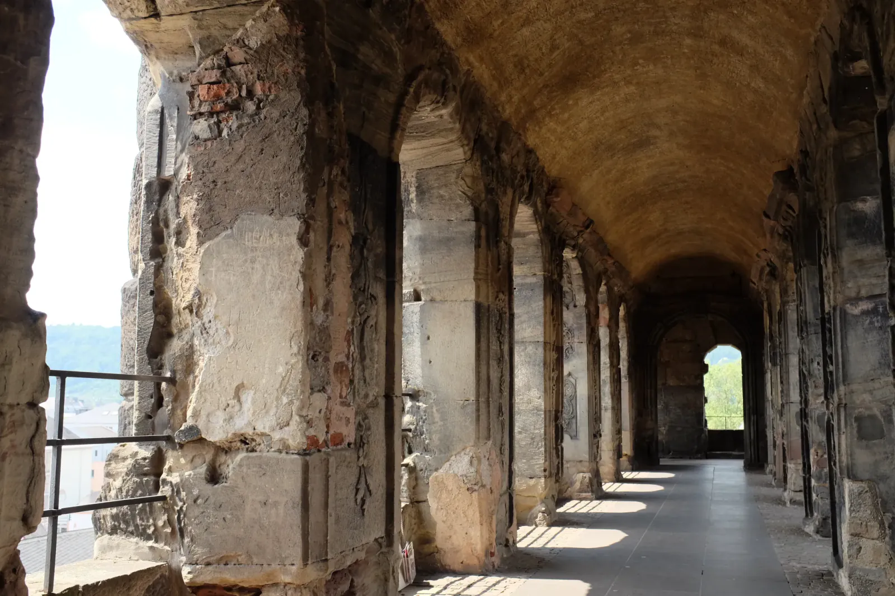

Roman Holiday
Western Germany is a long way from Rome, but in the fourth century Trier was one of the Roman Empire’s capitals, with emperors in residence, and they built on a scale to match. A surprising amount of it is still standing, enough to fill a bright June afternoon. I started at the Porta Nigra, Latin for “black gate,” a second-century city gate made of enormous sandstone blocks that have darkened with age. Up close the stone is rough and pitted, patched here and there with brick. The blocks were fitted without mortar and held together with iron clamps, and it is hard to imagine anyone lifting even one, let alone building a whole gate out of them. Inside, I climbed to the upper floor, where a barrel-vaulted gallery was striped with sunlight and arched windows framed the old town and a church spire.
Later that afternoon I made my way across town to the Kaiserthermen, the fourth-century imperial baths. A wide lawn in front of the ruins was the color of straw. Closer in, the brick walls still tower overhead, with rows of arched windows curving into a great apse and grass growing along the tops. Then I went underground. Brick service tunnels run beneath the baths, some so narrow that you could nearly touch both walls, with a bright patch of daylight waiting at the far end. They were built so the staff could tend the furnaces and move supplies without being seen by the bathers. Back at the surface, one stretch of wall stood behind scaffolding. Even ruins need upkeep.


Walls that have outlasted the empire that built them make the word “permanent” look optimistic, and the grass up on top seems perfectly at home! Anyone on the Mosel should give Trier a full day. The old town is compact and the Roman sights are an easy stroll apart. Walkable history is the best kind.